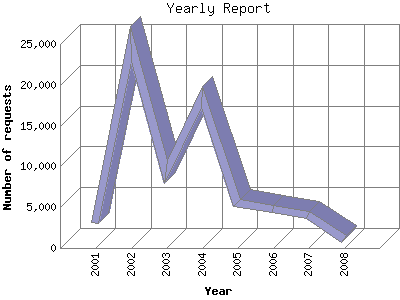

The Yearly Report shows total activity on your site for each calendar year.
Remember that each page hit can result in several server requests as the images
for each page are loaded.
Note: Most likely, the first and last years
will not represent a complete year's worth of data, resulting in lower hits.

| Year | Number of requests | Number of page requests | |
|---|---|---|---|
| 1. | 2008 | 1,093 | 448 |
| 2. | 2007 | 3,990 | 2,539 |
| 3. | 2006 | 4,720 | 3,019 |
| 4. | 2005 | 5,476 | 3,744 |
| 5. | 2004 | 18,475 | 15,989 |
| 6. | 2003 | 9,356 | 4,011 |
| 7. | 2002 | 24,961 | 7,752 |
| 8. | 2001 | 3,030 | 982 |
Most active year 2004 : 15,989 pages sent.
Yearly average: 4,810 pages sent. 8,887 requests handled.
This report was generated on February 17, 2008 02:17.
Report time frame December 10, 2001 23:14 to February 17, 2008 01:42.